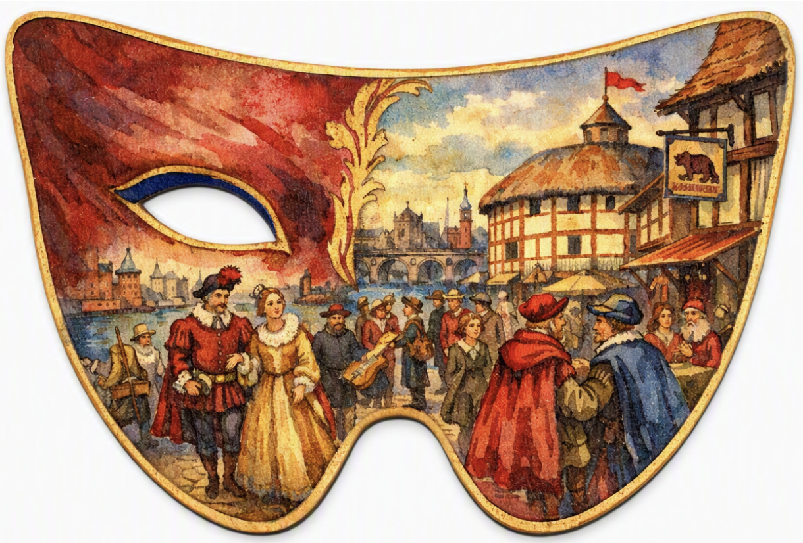

In this project, we chose a famous person, then told and AI chatbot to pretend to be this person. We interviewd them on things like their favorite color, hobbies, drink preferences...
My partner and I chose William Shakespeare. Copilot answered as Shakespeare, stating that is favorite colors were crimson, dark blue and gold, favorite hobbies included playwriting and people-watching on London's bustling streets. His favorite drink is a cool ale from the cask, enjoyed in a London tavern. And one place that feels like home is The Globe theater.
Considering this information, we decided to incorporate his love for playwriting into the design of the coaster by making the shape of it a comedy and tragedy mask.
Here is our prompt written to Copilot for the design of the mask: design me a drink coaster. make it the shape of a drama mask. On it should be a scene of a bustling london street with lots of people walking by, set in the 1580s, drawn in. renaissance/ watercolor style paint. make the main color scheme crimson, gold, and deep blue
This project was good way to get used to working with AI, exploring different roles AI can play, and learning how to give AI feedback for when it's output doesn't quite match what you wanted. We did the creative part of brainstorming a design for the coaster ourselves, and used AI just for information and the implementation of our idea.